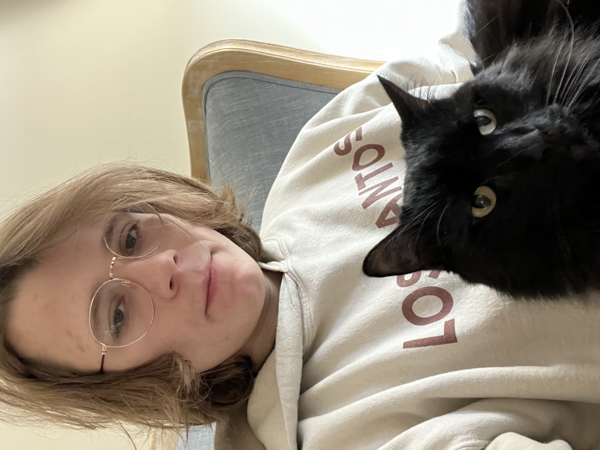

About me

Hello, my name is Carson Moore. I am an Information Technology (IT) major at Kennesaw State University. I find myself reflecting on the enriched experiences that have shaped my college years. From the beginning, KSU has provided an environment brimming with opportunities, setting the stage for a learning experience that extended far beyond the typical classroom. The university's commitment to excellance in education, coupled with a dynamic community, fostered a atmosphere where I could engage deeply in my choosen field of study and explore extracurricular activities.
The IT program at KSU stood out to me as being comprehensive and designed to equip every student with a solid foundation in both the theoretical and practical.
Through a mix of rigorous coursework, hands-on projects, and collaborative learning experiences, I have gained invaluable insights into the complexities of the
IT landscape. The school's program emphasizes on emerging technologies, cybersecurity, and data management, among other things, have prepared me to face the challenges and
opportunities in my path. The faculty's dedication to student success was always evident in their mentorship, guidance, and genuine interest they take in our
academic and career aspirations.
As I go on into my final year, I am filled with a sense of gratitude and anticipation. Kennesaw State University has not only been a place of learning but also a community
where I forged lasting friendships, connected with industry professionals, and participated in enriching activities. Looking ahead, I am excited to apply the knowledge and
skills I have acquired, take on new challenges, and contribute meaningfully to the ever-evolving field of information technology. My KSU experience has been nothing short of
transformative, laying a solid foundation for my future endevors and instilling in me the confidence to pursue my professional goals with determination.